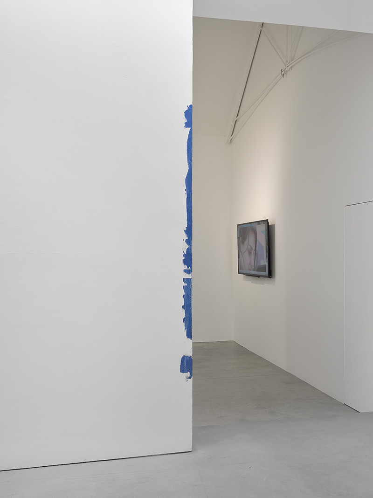
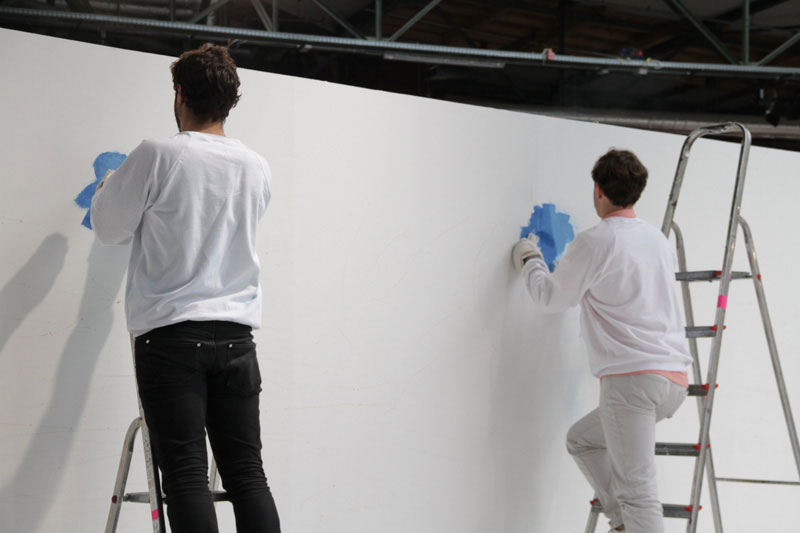
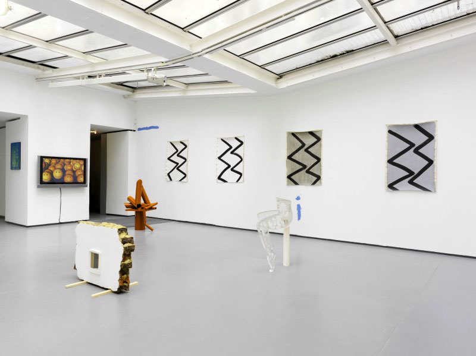

The boys the girls and the political curated by Hana Noorali and Lynton Talbot at Lisson Gallery, London, 2015


Workshop with Leverhulme Arts Scholars Summer School at Wysing Arts Centre, 2014
Image of work by Vivian Ezugha
Like a Virgin at VI, VII, Oslo, 2014

in the temporal manner of Blinky Palermo's Blaue Dreiecke, 1970, Palais des Beax-Arts, Brussels
with Ian Law and Davide Stucchi at Upcoming Exhibitions, abc, Berlin, 2013, Press Release

From script to reading to exhibition to performance to print at Rowing, London, 2013
DOMMAGE QU'ELLE DOIVE MOURIR, MAIS C'EST NOTRE LOT À TOUS! curated by Shanaynay at Gallery Kamm, Berlin, 2013
with Ian Law at Sunday Art Fair, Rodeo, 2012
Glaze curated by George Henry Longly at Chez Valentin, Paris, 2012
